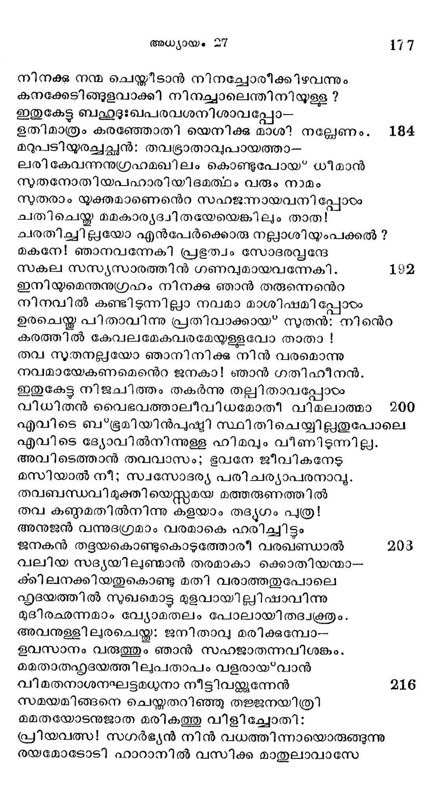

ഇസ്ഹാക്കിന്െറ ചരമാന൯ുഗ്രഹം യാക്കോബു കരസ്ഥമാക്കിയതു*
സ്ൃത്ത൦----പറയന്തുളളല്
ചിരകാലം നിജദിക്കിൽ കരതള്ളി യൊഴുകിയ
പെരുതാം ക്ഷാമവാരാശി പെരുക്കിയ തിരക്കൈകഠം
ഒരുവിധമടങ്ങിയ തരുണത്തിലിസഹാകന്
തിരികെപ്പോയ്* സ്വകനാടാം ഹെബിരോനില്കുടിപാത്തു.
ഗൃഹസ്ഥമത്തുമാലയ്തു നടുരത്നമിവന് പ്രായ
ബഫഹുഥലതനിമിത്തമായ*സ്ഥവിരത്വമിയന്നേററം.
മധുരിമ കലരുന്ന രസാലം വാര്ദ്ധകത്തിങ്കല്
വിധുതുല് പ്രഭയാര്ന്ന ഗുച്ഛമേന്തി വിളങ്ങുംപോല്
അബ്രഹാമിന്സുതന് ശി ഷുഗുണങ്ങരംക്കാകരമായോന്
സപ്രഭം ശോഭിച്ചു തന്െറ പലിതമസ്മകമേന്തി.
യുവകാലത്തകതാരില് വിളയാടിക്കളിച്ചുള്ള
ധവളിമ പുറത്തേക്കു വഴിഞ്ഞു വൃദ്ധദേഹത്തില്
എവിടെയും പരന്നപോലമിതമാ മൊളിയോടീ
ഭവികാരിനരനിന്നു ജരയാകും സുഹൃത്തൊടും.
മരണഭൂപനു പാര്ക്കാന് ത്വരയാ വെണ്കളിയിട്ട
ശരിയാക്കിയിരി പ്പോരി ജ്ജരിതൻ ദേഹമാം വീട്ടില്
ജാലകങ്ങംം തുറന്നിട്ട മടഞ്ഞ മട്ടിലായ്കകോയിീ
ചേലകേടു ഭവിച്ചെല്ലാസംഗതിക്കം കഷ്യമോര്ത്താല്.
കാഴ്ചപോയ മനുഷ്യന്െറ കഥയെന്തു പറയാവൂ
താഴ്യയണ്ടാം സമസ്മ സഴകര്യസഭഭാഗ്യാദികഠംക്കും
ആഴ്യപക്ഷം മാസമെന്നീക്കണക്കുള്ളിലുറ്്കിലാ
വേഴയയുള്ളോരരികിൽ നിന്നകന്നീടും നിഭൂതമായ്.
നല്ല പലഹാരമാരാനരികത്തു വച്ചുതിന്നാല്
മെല്ലവേനല്ച്ചവ കോടംക്കാമെന്തതെന്നൊട്ടറിവില്ല. 24
കൊടുത്താല് തിന്നിടാ മല്ലാതിരിക്കില് മൂകനെപ്പോലെ
പടുക്കാമെന്നതല്ലറതെ യെടുപ്പാന് പ്രാപ്ലിയുമില്ല.
കുടുക്കില് വീഴഴത്തുവാന് പയ്യരടുത്തു ദുവ്യഴികാട്ടി
നടത്തും കാലുതെററിട്ട പൊടുക്കെന്നസ്വവില് വീഴും.
ജഡമാത്മാവു താനെന്നു സ്വാനഭൂതി പ്രമാണിച്ചു
സ*ഫുടമായോതി* മുഗ്രജഡബുദ്ധി കളെപ്പോലെ
ഉദയാസ്മമയം രണ്ടുമില്ലയി പ്പോഠം കറേനാളാ-
യിദമോ തുന്നിസഹാകന് സ്വാനുഭൂതിക്കനുസാരം 2
നീലവും വെള്ളയും പച്ചചോപ്പ മിത്യാദി വര്ണ്ണങ്ങ--
ളാലപിക്കുന്നി സഹാകനിരുട്ടിന് വര്ണ്ണമായെല്ലാം.
ഇങ്ങിനെ യാന്ധ്യവാര്ദ്ധക്ൃയക്സാന്ത സ്വാന്തഃകരണനായ്*
തിങ്ങിന വൈഷമൃമോട മിസ്റ്റ്ഹാകനിരിക്കുമ്പോടം.
തന്നുടെ സീമന്തപുത്രനാകു മേശാവിനെ ശീലഫ്രും
തന്നുരികെ വിളിച്ചിട്ട ചൊല്ലിനാൻ തന്നഭിലാഷം;
ഇര്ജ്ജര ദേഹനാമീ ഞാനിജ്ജഗതിയുപേക്ഷിച്ചു
നിര്ജ്ജരലോകം ഗമിക്കും ദിവസം ഭൂരെയല്ലൊട്ടും. 40
തന്നിമിത്തം .പൂണിവില്ലമെടുത്തു കാനനേ ചെന്നു
മന്ദിയാതെ വേട്ടയാടി മൃഗമാംസം കൊണ്ടുവന്നു
ഭംഗിയായിപ്പുചിചിടട മന്്യതിക്ക മുല്പ്യ തന്നാല്
തുംഗമോഭ മശിച്ചാശീര്വദിക്കാം നിന്നെ ഞാന് പത്ര!
ഇതു കേട്ടേശാവു പോയി വനത്തിലാഖേടനാത്ഥം
ഭൃതിക്ക മുന് ജനകനന്െറ പ്രസാദം ലബ്ദമായീടാന്
ജനനിയാം റിബേക്കയി ക്കഥയെല്ലാ മറിഞ്ഞിട്ടു
കനിഷ്ഠപുത്രനേ നോക്കിയ്ുരച്ചാളീദൂശം മെല്ലെ: 48
മമനേത്രകനീനികയായ വത്സാ! തവാഗ്രീയ--
നമന്ദം നിന് പിതാവിന്നു മിഷ്ടഭോജ്യം കൊടുത്തിട്ടു
സകലാശീര് ധനങ്ങളം ഹരിപ്പാ നുദ്യമിക്കുന്നു
ഭൃഗയാത്ലമവന് പോയിക്കഴിഞ്ഞു കാനനത്തിങ്കല്.
നിജമാം വാഞ്ചയ മാശീവ്വയചന സംഗതിയും യാ-
ഭജനസക്തനാം താത നവനോ ടോതിടുന്നേരം
യട്ടച്ഛയായതു കേട്ടേന് സുതനാം നിന്നൊടോതീിടാന്
ഹൃദയം ശക്തിയായ ഹേമിച്ചതനാലോതിനേനിപ്പോഴം 56
പ്രഥമജാതാവകാശം ജ്യേഷ്ഷാനോടു തീറുവാങ്ങി
സ്ഥിതിചെയ്യും നിനക്കത്രേ വരാശിസ്റ്റിന്നവകാശം
അതിനാല് സ്വാദുഭോജ്യം നീ ചമച്ചു താതനില്നിന്നു
ക്ഷതികൂടാതടക്കുക വിശിഷ്മാശിസ്തകളെല്ലാം.
ന്യായമായി ക്കിടയ്ക്കേണ്ടു മവകാശ മുപേക്ഷിച്ചാ--
ലായതമാ മവമാനം ഫലമാം സംശയമില്ല.
കരത്തില് വന്നൊരു ഭാഗ്യം തുരത്തുന്ന മനുഷ്യനേ
കരുത്തില്ലാത്തവനെന്നു തരത്തില് ചൊല്ലമെല്ലാരും 64
അതിനാലഗ്രജന്പേര്ക്കു വിളമ്പിവചിരിക്കു മീ-
യതിമിഷ്ട വിഘസംനീ യശിച്ചാലും യഥാന്യായം.
മുടക്കില്നിന്നിതു കേട്ട വിടുര്ക്കയാല് നിനക്കിപ്പോടം
മിടുക്ക് പ്പററിയല്ലായ്കി ലൊടുക്കം ഭോഷനായേനേ.
കുടുക്കില്ചെന്നു വീണിട്ട പിടയ്ക്കില് സാദ്ധ്യമെന്താദ്യം
തടുക്കാന് നോക്കണം ശ്രുതൊടുക്കും യന്്രസംഭാരം.
പൊടുക്കെന്നെന്മകനാട്ടിന് കിടയ്ക്കല് ചെന്നുപോതംര-.
ണ്ടെടുക്ക നല്ലതായിങ്ങു തിടുക്കം വച്ചുവന്നാലും. 72
ഞൊടിക്കംപാകവും ചെയ്തകൊടുക്കാം നിന്പിതാവിന്നു
മടിക്കാതാശിഷം വാങ്ങാം മുുക്കേണ്ടാ മനസ്സില് നീ.
ഉടനേ ചൊല്ലിനാൻ യാക്കോബുടലിൽ രോമമേറുന്ന
പടുവാം ജ്യേഷ്ഠനും രോമരഹിതന് ഞാനുമന്യോന്യം
കടുതാം ഭഭദമുണ്ടെന്ന തറിയുന്നാകയാലീ ഞാന്
അടുക്കുമ്പോടം തടവിനേരറിയും കദ്ധനാം താതന്.
വരമാം ധന്യവാദത്തെ ക്കരുതിച്ചെന്നൊരിസ്റ്റാധു
ഭരശാപച്ചുമടേന്തി മടങ്ങാനു മടിയാകും. 80
ഇരയെന്നു കരുതീട്ട പെരുതാ മാശമുത്തല്ലോ
എരിതീയില് പതിച്ചയ്യോ പൊരിയുന്നു ശലഭങ്ങടം,
ഉരചെയ്യമ്മ യെന്കുഞ്ഞേ ! ദരമൊന്നിന്നു മാകാ കേ-
ളരിയവന് കടല്താണ്ടാം കുറയഭ്ധൈര്യമുണ്ടെങ്കില്
ഹൃദി ധൈര്യം വെടി ഞ്ഞോരു നരനെസ്റ്കാരമേയങ്ങരം
മതിയാവോളവും ദംശിച്ചിടുന്തു കാണ്മതല്ലോ നാം.
ഭുവന മാന്യനാം നിന്െറ പിതൃപിതാവൊരുനാളില്
ഭവനസ്ഥ പരിജന നിചയത്തേ സ്വരൂപിച്ചു 88
അയുതായുത സംഖ്യാക മഹിപ വാഹിനിയേ നേ-
ത്തടവേ പാടനം ചെയ്യകഥ നീ കേട്ടതില്ലല്ീ?
അവന്െറ രക്തമലും നിന് സിരയിൽ സഞ്രിക്കുന്നോ-
രളവില് കാര്യബന്ധിയാം ഭയമുണ്ടാകുമോ നിന്നില് ?
തെരിക്കെന്നോടി നീ ഛാഗശാിശുക്കഠം രണ്ടി നെക്കൊണ്ടു
വരിക, നിന് മാതൃകയ്യില്ത്തരിക ഭോജ്യമുണ്ടാക്കാം.
ഒരുമാത്രയതുപോലും കളയൊല്ലാ, മറിച്ചാകില്
പരിഹാര മുളവാകാത്തരത്തില് നഷ്ടമുണ്ടാകും. 96
ഇതു കേട്ടോടിനാനൊന്നും പറയാതെ; ക്രിയകൊണ്ടു
കുതരുകേന മറുമൊഴി കൊടുപ്പതല്ലയോ സത്യം 1
മുദുതര പിശിതത്തേ രുചി യേററ മുളവാകും
വിധത്തില് സംപചിച്ചാശു ഭര്ത്തുചിത്ത ഹിതാഭിജ്ഞാം
നിമിഷംകൊണ്ടവന് ദേഹം രോമമുളള തോലിനാലും
വിമതനാ മഗ്രജന്െറ പടത്താലും മാറച്ചിട്ട
ജനകനന്െറ നികടത്തേക്കയച്ചു ഭോജനത്തോടെ
ജനനീകാലയോഗജ്ഞാ ദൈവസഞ്ചോദനായത്താ. 104-
അരികേ ചെന്നതിഭക്ത്യാ വിളിച്ചു താതനേ യാക്കോ--
ബതു നേര മനുയോഗി ച്വവനോടാരു നീ പുത്രാ!
പ്രതീവാക്യമുരച്ചു; ഞാന് ഭവല്പത്ര നിഷാവത്രേ
തവ ഭോജ്യം തയാറാക്കിയരികില് വന്നിരിക്കുന്നേന്.
ഇസഹാക്കോതിനാന് വേട്ടയിറച്ചിയിത്ര വേഗത്തില്
കരസ്ഥമാകുവാനുള്ള നിമിത്ത മെന്തുരച്ചവാലും?
അതിന്നോതീ ബദല് യാക്കോബഖി ലേശന് തവ ദൈവം
കുതികൊണ്ടിടുമാറാക്കി മമനേര്ക്ക് മുഗോല്ഘത്തെ. 112
അടുത്തിങ്ങു വരികയെന്മകനാകു മിഷാവോയെ--
ന്നറിവാനാഗ്രഹം പാരം തടവി നോക്കുവനിപ്പോഠം
ജനകനിങ്ങനെ ചൊന്ന മൊഴി കേട്ട വിഷമിച്ചു
തനയന് തത്സമീപത്തു ചെന്നുനിന്നു ഭയത്തോടെ.
തടവി നോക്കിയിട്ടോതി ജനകന് സംശയാപംനന്നന്?
സ*ഫുടം കൈകടം പുവ്ചജന്െറ സ്വരമോ മററവനന്േറതും.
എവിടെ യെന്മനസ്തീന്നൊരുറപ്പു ഞാന് കൊടുത്തിട്ടീ
സുവീദി തസുരഭിയാ മശനം സ്വീകരിക്കുന്നു? 120
ഇളയവന് കടുചിത്തന് ലവമാം പായസത്തിന്നു
ലളിതബുദ്ധിയാ മഗ്രുന്നുടയ ജ്യേഷ്ഠാവകാശം
വിലവാങ്ങിയൊരുനാളില്തുടങ്ങി തല്ലരി ഹാര--
മുളവാകും വിധത്തില് വല്വതുമീ യഗ്രജാതന്നു
സദയം നല*കണമെന്നു കരുതി ഞാനിരിക്കുന്നു
സുതരേയൊന്നുപോലല്ലോ ജനകന്മാര് വിചാരി
അവസാന ദിവസത്തിലരുളേണ്ടു മനുഗ്രഹ-
മിവനു നല*കണമെന്നാ ണിനിക്കുളള മനോഭാവം. 128
ഉദയ സുര്യനുള്ളോരു കിരണസഞ്ചയത്തേക്കാ--
ഭധികം സാഖ്യദമല്ലോ ചരമാര്ക്കമയൂഖങ്ങരം.
പരി ഹാരമിതു സിദ്ധ നിലയിലാക്കി ടുവാനാ--
ണുര ചെയ്തതിഷാവി നോടശന സഞ്ചയനം ഞാന്.
അതു സാധിക്കയില്ലെ ജിലവന് സ്ഥിതി മഹാകഷ്മ-.
മിതു വോളെന്നുവച്ച തള്ളവാനുമെളതല്ലാ.
വിശപ്പും പാരമുണ്ടി പ്പോളിതൊക്കെക്കൂടി നോക്കുവ്പോ--
ഭശിക്കാതെ വിടുന്നാകില് വശക്കേടു വരുന്താനും. 198
ഇതുഭക്ഷിച്ചചരനായ*വരുന്നാകിലതു ദൈവ
ഹിതമെന്നല്ലാതെയില്ലാ പറവാന് മറൊറന്നുമി പ്പോഴം.
മനുജചിന്തനയല്ലാ പരമേശവിചാരങ്ങഠം
മനസികണ്ടുള്ളകാര്യം മറിച്ചുവന്നിടും ദൈവാല്.
ഇതുകളൊക്കെയുമേതാന് ക്ഷണംകൊണ്ടു ജനകനന്െറ
മതിയാം വായുവില്ക്കൂടി ക്കടന്നു കൊള്ളിയാന്പോലെ.
മനസിതീര്ച്ചയില്ലാതെ കുഴങ്ങിപ്പിന്നെയുമല്ലന്
വിനവി പൂവ്വജജനോനീ യതേയെന്നായ പ്രതിവാക്യം. 144
ഉടനേ ടൈവേച്ഛപോലെ വരട്ടേയെന്നുരംക്കളത്തി--
ന്നിടരാററിക്കനിഷ്ടന്െറ വിഘസത്ൃപ്പിയായത്തിന്നു.
അശനാദി കഴിഞ്ഞപ്പോളവനോടോതിനാന് താതന്
ഭശമിയാം മമ വക്രേര തരിക ചുംബനം പുത്ര!
തനങ്കന് ചുംബനംചെയ്യും തരുണംതദ്/സനത്തിന്
സുരഭിത്വം ജനകന്നു പരമാനന്ദമുണ്ടാക്കി
ഹൃദയകുട്മള മപ്പോഴം വികിഞ്ഞു നന്മകരന്ദ--
സ്രതിതുല്യമനുഗ്രഹമഴയും വര്ഷണം ചെയ്താന്: 192
മുമ പുത്രനുടെ ഗന്ധം ജഗദീശ കൃപാസമ്പ--
ത്തമരും മഞ്ജുളസസ്യകസുമുക്ഷേത്രഗന്ധംപോല്
ദവിക്കട്ടെ വിഹായസ്റ്റിന് ഹിമവും ഭൂമിജമായ
നവസംപുഷ്മിയം ദ്രാക്ഷാരസതൈലസുധാന്യാദി
പ്രച്രമേകീടട്ടീിശന് സകലജാതി വംശങ്ങഠരം
സുചരിത്രാ! വണങ്ങട്ടെ ഭയഭക്ത്യാതവ മുന്പില്.
സ്വകരാം സോദരന്മാർക്കു പ്രഭവായ? നീ ഭരിച്ചിീടും
വിഗതസംശജങ്ം മാതൃസുതരാല് നീ സ്കൃതനാവൂ. 160
നിനക്കു ശാപമേകുന്നോന് കനക്കെ ശ്ല്ചനായ*ത്തീരും
നിനക്കാശിസ്റ്റരുളന്നോന് ലഭിക്കുമാശിഷം നിത്യം.
ഇതിമൂല്യാധികമാശീര് ഗണമെല്ലാ മനുജാതന്
നതശീര്ഷമതില്വാങ്ങി ഗലൃതനായസമയത്തു
സരഭസം പ്രവേശിച്ചു സരസമാകിയ ഭോജ്യം
കരതാരിലെടുത്തുംകൊണ്ടുരുമോദമവിടത്തില്
വിളിച്ചു താതനേഭോജ്യം കഴിച്ചുകൊണ്ടനുഗ്രഹ--
മളിപ്പാന് ജേയേഷ്ഠനാമേശാവിളക്കം തെല്ലമില്ലാതെ. 168
ഉടനേ---എന്തുരയ്ക്കുന്നു --ജനകന് സംഭ്രമത്തോടെ
ഇടറിച്ചൊന്നു: നിന് മുന്പില് ഒരുവന് വന്നെനിക്കായി
സരസഭക്ഷണം തന്നു വരമെല്ലാ മടക്കിക്കൊ--
ണ്ടരമങ്ങുകടന്നാശീര് നിലയമാമവനെന്നും
ഇതുവരെയെവിടെ നീയിരുന്നു? താമസംമൂലം
ചതിയില് പെട്ടുപോയ: മന്ദമതിനീ യേതുനേരത്തും.
ഗുണമാകാനിരിക്കുന്ന മനുജന്നേതൊരുനാളും
ഗുണമായ*വന്നിടുമെല്ലാം കരുതാതെ യ/ഥാഭാഗ്യം- 176
ഗുണമാകാതലയേണ്ടും മനുജന്െറ തലതന്നില്
ഗണം കെട്ടിക്കൊടുത്താല മഴിഞ്ഞു വീണിടും താഴെ.
ഉദരപുരണമൊന്നേ നിനക്കുളളു പുല്ഷാത്ഥം
വിഭുരത്വം വിഹനിച്ചാല് വിളയും ദുഷ*ഫലമേവം.
നിനക്കു നന്മ ചെയ്തീടാന് നിനച്ചോരീക്കിഴവന്നും
കനക്കേടിങ്ങുളവാക്കി നിനുച്ചാലെന്തിനിയുള്ള ?
ഇതുകേട്ട ബഹുഭുഃഖപരവശനിശാവപ്പോ--
ളതിമാത്രം കരഞ്ഞോതി യെനിക്കു മാശി നല്ലേണം. 184
മറുപടിയ്രച്ചച്ഛന്: തവഭ്രാതാവ്പായത്താ--
ലരികേവന്നനുഗ്രഹമഖിലം കൊണ്ടുപോയ ധീമാന്
സുതനോതിയപഹാരിയിദമത്ഥം വരും നാമം
സുതരാം യക്തമാണെനന്െറ സഹജുന്നായവന്ി പ്പോഴം
ചതിചെയ്ത മമകാര്യദ്വി തയേയെങ്കിലും താത!
ചരതിച്ചിലയോ എന്പേര്ക്കൊരു നല്ലാശിയ്ുംപക്കല് ?
മകനേ! ഞാനവന്നേകി പ്രഭുത്വം സോദരവപ്വന്ദേ
സകല സസ്യസാരത്തിന് ഗണവുമായവന്നേകി. 192
ഇനിയുമെന്തനുഗ്രഹം നിനക്കു ഞാന് തരുന്നെന്െറ
നിനവില് കണ്ടിടുന്നില്യാ നവമാ മാശിഷമിപ്പോടം
ഉരചെയ്ത പിതാവിന്നു പ്രതിവാക്കായ* സുതന്: നിന്െറ
കരത്തില് കേവലമേകവരമേയുള്ളദവാ താതാ !
തവ സുതനല്ലയോ ഞാനിനിക്കു നിന് വരമൊന്നു
നവമായേകണമെനന്െറ ജനകാ! ഞാന് ഗതിഹീനന്.
ഇതുകേട്ട നിജചിത്തം തകര്ന്നു തല്ലിതാവപ്പോടം
വിധിതന് വൈഭവത്താലീവിധമോതീ വിമലാത്മാ 200
എവിടെ ബ*ഭൂമിയിന്പുഷ്മി സ്ഥിതിചെയ്യില്തുപോലെ
എവിടെ ദ്യോവില്നിന്നുള്ള ഹിമവും വീണിടുന്നില്ല.
അവിടെത്താന് തവവാസം; ഭവനേ ജീവികനേട
മസിയാല് നീ; സ്വസോദര്യ പരിചര്യാപരനാവൂു.
തവബന്ധവിമുക്തിയെസ്്റമയ മത്തരുണത്തില്
തവ കണ്ണമതില്നിന്നു കളയാം തദൃഗം പുത്ര!
അനുജന് വന്നുഭഗ്രമാം വരമാകെ ഹാരിച്ചിട്ും
ജനകന് തദ്ദയകൊണ്ടുകൊടുത്തോരീ വരഖണ്ഡാല് 203
വലിയ സദ്ൃയിലുണ്മാന് തരമാകാ ക്കൊതിയന്മാ--
ക്കിലനക്കിയതുകൊണ്ടു മതി വരാത്തതുപോലെ
ഹൃദയത്തില് സുഖമൊട്ട മുളവായില്ലിഷാവിന്നു
മുഭിരഛന്നമാം വ്യോമതലം പോലായി തദ്വക്രതും.
അവനുളളിലുരചെയ്ത: ജനിതാവ് മരിക്കുമ്പോ-
ളഭവസാനം വരുത്തും ഞാന് സഹജാതന്നവിശങ്കം.
മമതാതഹ്ൃദയത്തിലുപതാപം വളരായ*വാന്
വീമതനാശനഘട്ടമധുനാ നീട്ടിവന്ക്കുന്നേന് 216
സമയമിങ്ങനെ ചെയ്തതറിഞ്ഞു തജ്ജനയിത്രി
മമതയോടനുജാത മരികത്തു വിളിച്ചോതി:
പ്രിയവത്സ! സഗര്ഭ്യന് നിന് വധത്തിന്നായൊരുങ്ങുന്നു
രയമോടോടി ഹാറാനില് വസിക്ക മാതുലാവാസേ

ഭയമേകം ക്രധാഗ്നി തെല്ലവിഞ്ഞു ജ്യേഷ്ഠാൃത്തല്പം
മയമായ*ത്തിീര്ന്നിടുംപോതു വരുത്താം ഞാനിഹ നിന്നെ
അതുമട്ട മവിടത്തിലിരിക്ക വേനലിന് ക്രര്യേം
ക്ഷതിയേലുംവരെബ'ഭേകംചെളിയ്ക്കും പാത്തിടുന്നില്ലേമ24
ഹതനായ* നീ ഭവിച്ചെങ്കിലവനും നഷ്ടനായിടും
വിധിതന് വൈപരീത്യ ച്ചെങ്കനലില് ദഗ്ധ്ധയാം ഞാനും,
ഒരു ഘസ്രരമതില് രണ്ടു തനയരൊന്നുപോല് പോന്റോ--
യരിയ വേദനെയത്താ നിടയെന്തിന്നുളാക്കുന്നു ?
ഉടനേ യാകുബന് ചൊന്നാൻ: ജനകനിക്കഥയെല്ലാം
തടവുണ്ടാക്കിടും യാത്ര മുടക്കും സംശയം വേണ്ടാ.
മരണസിസ്ധവിന് വക്കിൽ നിലകൊള്ളം പിതാവെന്നെ--
ക്വരകാലമകലത്തു വസിപ്പാൻ സമ്മതിക്കില്ല. 282
അതിനോതി റിബേക്കായെന്മതിയിലൊന്നു തോന്നുന്നു
ഹിതിയ സ്ത്രീകളാമെന്റ സ*നുഷമാരാ ലെനിക്കുള്ള
വൃഥനിന് താതനെ കേടംപ്പിച്ചതിനു നല്പ്രതീകാര--
വിധിയായ* ഹാറനില്ന്ന്നു വധുവേ സ്വീകരിച്ചീടാന്
ശരിയായിട്ടനുവാദം തരുവിക്കാമി തരംതെ--
ളുരിയാടുകയം വേണ്ടാ തെരിക്കെന്നു തിരിക്കാംതേ.
വഴിപോല് ചെയ്തിടാമെങ്കില് പിഴയെന്റയേയിരുന്നീടാം
പഴിയോതീിടുകില്ലാരു മഴകായൊക്കെയും തീരും. 240
ഇദമുക്ത്വാ സുതിനിതന് ഭയിതാഗ്രമതില്ച്ചെന്നു--
ഭിദുരചിത്തയായോതീ വധുക്കംം മൂലമെന് ചിത്തം
പെരികെത്താപമേലന്നു ദിനവും സങ്കടാബ്ലിക്കഠം
കരകാണാതുഴലുന്നിക്കഥ യങ്ങേന്ക്കറിവില്ലാ.
ഇരുപാര്ശ്വത്തിലും കൂര്പ്പുകുറയാമുള്ളകംപോലെ
ഇരുപേരങ്ങിരുന്നോണ്ടാല് വരുമോ ഹൃത്തിനാശ്വാസം.
അനുജന് കൂടിയീവണ്ണം പരജാതിസ്്രിയം വേട്ടാ-൦
ലെനിക്കു ഭൂമിവാസത്തിലണ്ുവ മാഗ്രഹമില്ല. 248
അതിനാല് യാകബനേയെന് സഗര്ഭ്യന് തൻ സവിധത്തി-.
ലയച്ചു വേളി സാധിപ്പാനന്ദജ്ഞ നല*കണമാര്യാ।
സ്ഥവിരന് ചൊന്നിതിനില്ലാ വിപരീതമെനിക്കിപ്പോ--
ളവരജന് വരട്ടെ ഞാനയന്ക്കാമാശിഷമേകി,
ഉടനേ യാകബന് വന്നു പരിണയാത്ഥകമായി
തിടിരെന്നാശിയുമേകിയയച്ചാന് പടനാരാമില്
ഒരു കോണിലൊതുങ്ങി നിന്നിതു കണ്ടോരിഷാവപ്പോഴം
കരളില്തന് വിവാഹം തന് പിതാക്കടംക്കി ഷ്ടമല്ലെന്നു 256
കരുതീട്ടിഷ*മയേലിനെറ മകളരായിരുപേരേ
പരിണയിച്ചുരുളിവിട്ടടപ്പില് ചാടിയപോലെ